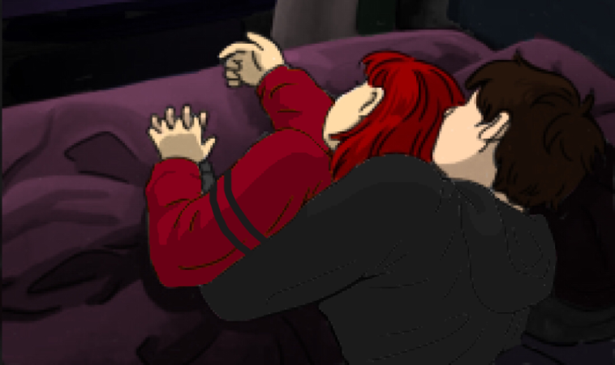

"I'm sure at this point being best friends with some escaped prisoners can't get much worse for my record" -Valentine to Eren
Title: The Detective
Full Name: Valentine Albane (Used Sugar as a last name alias)
Nicknames: Val (Shortened Name), Albane (Jackson, "Kei" and Chief), Redhead (PM), [Female Dog] (Rude People), Obstinatio (Wilson)
Age: 23
Birthday: June 20
Height: 5'8.1 (very slightly taller than Eren)
Race: Werewolf Mystic (Formerly Human)
Status: Alive and content
Current Appearance: Red Hair swept to one side over the shoulders, Green Eyes, Maroon Red Sweater with Black Sleeve Stripes, Navy Blue Leather Coat with Blue tie; Blue Buttoned Jeans, White Fur Color
Past Appearance: Red Buttoned Blazer with Black Pleated Skirt (School Uniform), Red Varsity Jacket (From Mother)
Mask Visage: A White Wolf Mask
Hobbies: Meddling into personal affairs to solve cases, Used to play guitar and paint, spending time with Eren or Ally
Skills: Observant, Self Sufficient, Trained Fighter, Can Lockpick doors
Strengths: Voice of Reason, Can be entirely focused and dedicated to a goal (Spends an entire night trying to search for Eren after he ran away), Ambitious, Resilient
Weaknesses: Can become too hyperfocused on a focus, Has a hard time expressing herself and may pass off as inconsiderate, Secretive
Likes: Getting progress done, Being able to hangout with her friends, Relaxing at home, the color scheme of red, pancakes
Dislikes: Making Mistakes, Constantly working with very little to no breaks, Her plans being interrupted
A confident detective who believes in her skills and abilities.
Eren (Positive)
Eren is Valentine's closest friend since her childhood. They met when she stuck up for Eren against kids that were bullying him for being a werewolf. Since then they've maintained a good friendship up until graduation when Eren somehow went missing. Val was however too busy with trying to pursue her career as a Private Investigator to notice that he went missing (Ironic). She instead thought that Eren had to move or some situation had come up where he couldn't remain in contact with her anymore. 5 years later, much to her surprise she ends up reuniting with Eren after her mail got sent to the wrong Sugar as both her and Eren were overjoyed to see eachother again, both not knowing what really happened to each other.
They're shown to enjoy each other's company a lot and will hangout a bunch. However as time went on, Val has made several mistakes in their relationship such as when she accidentally got him and Sugar arrested and did nothing to help him. When he got broken out, she was too ashamed to say anything to him and simply avoided him but when he got caught a second time and actually had the power to help him since she was in the same building as him with her police permissions, she still chose not to do anything, instead she just watched him in his cell through the security camera. Once he got broken out a 2nd time, Alyssa decided to reconcile their friendship by tricking her into speaking with Eren which reveals that he doens't hold anything against her since she was just trying to keep her job and they make up.
Throughout their adventures, they slowly get closer with each other as they demonstrate their ability to easily work together in situations and are often on the same page on most things. Luna comments that this was how they acted before the year gap of Eren disappearing and is glad to see them close to how they were before in the past.
Their relationship takes a massive turn as a result of what happened with Chief as Eren is shown to be willing to stick with Val no matter what happens and tries to defend and comfort her through it all. After the event, they grow much more closer together but Val becomes much more dependant on Eren and feels safer with him so they made the arrangement that Val can temporarily sleep with Eren in his room and Ally can stay with Alyssa and the kids so she has friends to hang out with. (Although the arrangement ends up being practically permanent) Eren states that he can sleep on the floor but Val refuses to let him sleep there and forces him to sleep in bed with her which he reluctnatly complies and sleeps away from her on the bed. However, in the morning, he wakes up to Val spooning hugging him from behind which he lets happen and pretends to be asleep whenever she wakes up. (this pretty much happens everynight but they don't say anything about it)
As time goes on, they've grown very close with each other (they're practically together, they just haven't admitted any feelings) and will always support each other and stick together no matter what happens.
Luna (Positive)
Luna is Valentine's other close friend from high school. They were apart of a friend group that consisted of Her, Eren, and Luna. Once graduation rolled up, the group ended up disbanding after Valentine pursued her career as a detective and underwent police training. 5 years later, she's convinced by Eren to look for Luna and they eventually do, much to her happy surprise. After they reunite, they all drink together (after some deals), both her and Luna get drunk together and playfully tease each other while Eren just kinda awkwardly is in the background. When not wrapped up in the head of things, she will be concerned for Luna and try to deny any attempts at drinking (although she can be nudged to it).
Sugar (Positive)
Sugar is a good friend of Valentine. She oftens confides to her for help with any problems she has with Eren, most notably when she feels bad for "betraying" Eren. Although, after everything they've been through together, they reached a level of friendship with each other where they trust them enough to talk about personal issues or to forgive the other whenever something happens. A frequent instance of this is when Sugar and Landon get on her nerves which occasionally breaks into a heated dispute or fight but they will end up forgiving each other in the end.
Ally (Positive)
Ally is the kid sister to Valentine and daughter of Valerie. Is often manipulative of Val but only because she's hardly home all the time, not making out with Eren or solving cases of the man behind the slaughter.
Sandy (Positive)
The Secretary who works at the same Police Department as her. Val is one of the very few people who talk to her and considers her as a friend after the whole incident with the inmate breaking out.
Jackson (Positive)
A fellow cop coworker who works at the RPD alongside Val. They have been partners in several cases together and make a good duo. He often socializes with her during shifts and they are quite friendly towards each other.
Valerie (Neutral)
Valerie is Valentine's mother. Was entrusted with Ally after they moved out, wonder why, maybe try asking her about it.
Sallie (Negative)
Dislikes Sallie due to her incessant teasing about her and Eren, as well as poking fun at her issues. But can tolerate her more than Landon.
Landon (Negative)
Valentine doesn't really care for Landon as he oftens antagonizes Eren which she dislikes and gets mad at him about.
Nick (???)
Secret Character
Ven (Negative)
Hates his guts for when he tried to kill all of her friends and herself. Also when he kidnapped her and Eren and essentially tortured them via physical and mental trauma. Glad that he's dead.
- Def. Best Girl
- Only character with red hair and green eyes (Valerie doesn't count as she's only mentioned and Ally has brunette hair)
- One of the four characters who can lockpick with the other three being Eren, Jay, and Terrin
- One of the three characters who has more than one person who likes them. (Not saying who though)
- One of the three characters who owns a gun. The others being Eren and Luna
- The only character (so far) who has overcome some of their trauma (on focus anyways)